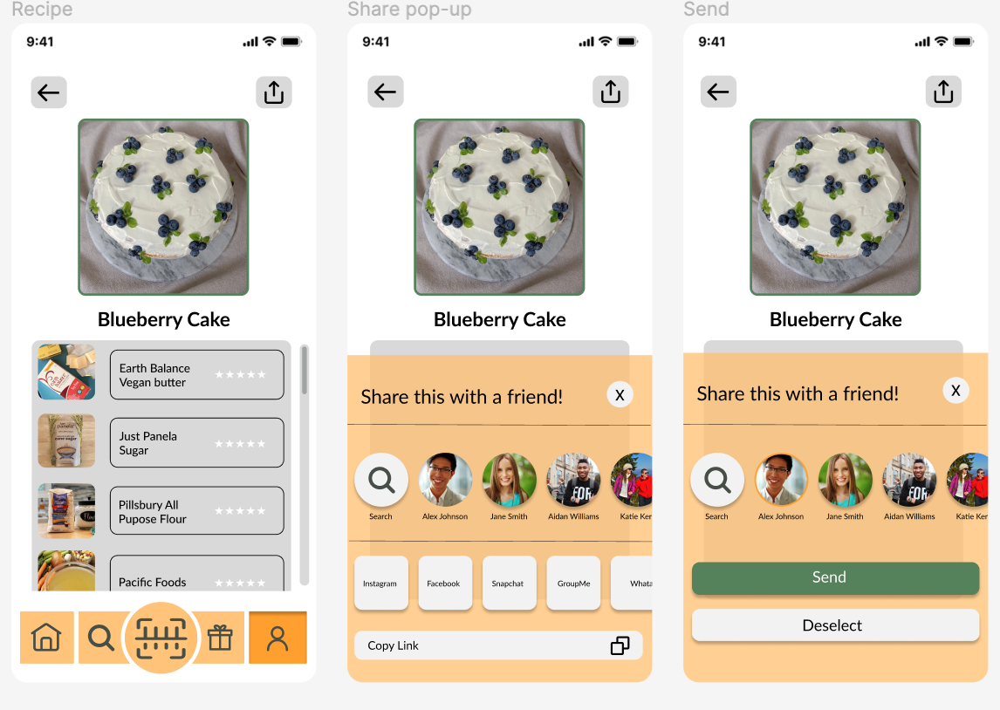

Entering the CHI 2023 Student Design competition prompted my team’s desire was to tackle the issue of responsible consumption. Being sustainably and ethically conscious is often overlooked in the sake of time and ease, but we knew with the right tools we could make that process significantly easier.
Conscious consumerism is rare in our society. It's easier for people to buy whatever looks the best because it's more efficient then spending time researching before going to the store, this helped us develop our problem statement:
Consumers should have easily accessible information about any brand's ethical and sustainable impact in order to make better, more informed decisions detailed to their needs.
In order to understand the user group for this app, we conducted interviews. When developing the selection criteria for our users, we wanted to represent a wide demographic of people.
To do this, we attempted to conduct interviews with users from multiple facets of life. We intentionally included groups of college students, post college students, middle aged adults, parents, elderly, and people of ranging gender.
Overall, our attempt was to represent any group who may be going to grocery stores and making shopping decisions themselves.
In order to conduct interviews, we compiled a list of questions separated categories that included questions about general grocery shopping, different grocery brands, environmental/sustainability and lastly questions about different apps users were familiar with. We then conducted the interviews via Zoom and Facetime.
After the interviews, we compiled the audio transcriptions to analyze the data. While dissecting important information we created an affinity diagram, user personas, and user journey maps to assist with developing our design requirements and to establish the most important themes our interviewees discussed
Following that, we completed a competitive analysis to differentiate EcoGo from competitors
Our goal was to highlight our apps unique and immense range. To accomplish that, we not only wanted it to offer features to quickly scan products for sustainability ratings, but for it to be a social platform for users to connect with others, a space to organize and save products according to the users will, a way to enjoy sustainable recipes from others, and a space to submit your own recipes to share, all while promoting products and companies that care about their impact
To dig deep into all the possible ways to meet user needs, our team drew out a set of 10 designs that are already in existence, and 10 new ideas to meet these needs. After, we ranked them and implemented the design choices with the highest ratings.
Following our ideation activity our group created a low fidelity prototype including six core tasks for users:
To refine our design, my team conducted usability tests with five participants
Through this process, we found issues with our visual “you are here” indicators, as well as our product rating visuals, and our lack of back buttons that account for human error and/or indecision. To combat this, we made adjustments.
Following our research on the low fidelity prototype, we redesigned the app and included features that meet the user’s needs with more clarity
Below are screenshots of our interactive high-fidelity prototype of EcoGo:
Overall, creating an app that values positive change has been a very rewarding experience. The process of working in a team with good communication skills and strong work ethic has inspired so much creativity and has shown me the power collaboration has.